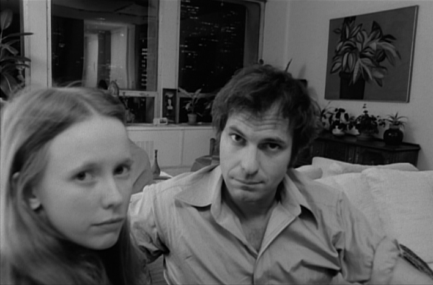

| |
|
|
10. April 2006
Coming Apart (US 1969)
"One of the most challenging, visionary,
important films of independent cinema" - INDIEWIRE
"Coming Apart ist ein wieder entdecktes Dokument aus dem Jahr 1969,
das die Versuche eines New Yorker Psychotherapeuten beschreibt, sich
der eigenen Existenz mittels einer versteckten Kamera zu
vergewissern. Als sich die Popkultur bereits ihres utopischen
Potenzials beraubt sieht, erzählt der Film gleichsam von der
Orientierungslosigkeit einer ganzen Gesellschaft: Psychoanalyse dient
als Religionsersatz, doch niemand therapiert den Therapeuten. 1969
zerstörten die Reaktionen der Presse Ginsbergs Karriere, heute
besticht Coming Apart als visionär kraftvolles Zeugnis." -
Andreas Busche, Viennale 2005
Im selben Jahr entstanden wie Easy Rider, Medium Cool und Midnight Cowboy, aber eher durch Andy Warhol, Cassavetes, D.A. Pennebaker oder Antonioni beeinflußt, erntete der Independent Kultfilm "Coming Apart" in seiner kurzen Laufzeit in New York damals nur höchste Kritikerehren oder Totalverrisse. Ich möchte es eher mit Lars von Triers Idioten oder dem ultimativem Gonzo-Film eines Seymore Butt vergleichen, ein zeitloses Meisterwerk, nicht für den typischen Popcorn Kinobesucher geeignet. Coming Apart hat einen hohen formalen Anspruch, ist durchgeplant bis ins letzte Detail, will aber ein künstlerischer Amateurfilm bleiben. Der Arzt filmt seine Patienten, um sich selbst verstehen zu lernen. Das provokante Thema: Das Ausnutzen des intimen Psychiater- Patienten Verhältnis und die prototypische moderne 70er Dramatik einer offenen Beziehung, mit einer damals schon übertreibenden jungen Sally Kirkland (ihre erste Rolle), die wie im Titel angedeutet vom Helden schlußendlich verlassen wird.
Rip torn gives one of the great screen performances as a psychiatrist secretly filming his own mental breakdown in Milton Moses Ginsberg's classic exploration of dark eroticism and self-referential cinematic form. Anticipating the cam-corder driven, diary films of today, the entire film is shot into a mirror from a single camera angle in a one-room apartment. Psychoanalyst Joe Glazer, aka Glassman, rents a studio apartment in a towering, glass-walled skyscraper, away from his office and his pregnant wife, where he has a variety of sexual encounters with a series of women - all of which he films with a hidden camera. But always looking over his shoulder, Joe becomes a voyeur of his own life, the camera his only mode of communication. Until finally encased in his own reflection, Joe ends up filming his own disintegration.
Although entirely scripted, this fierce, frank and explicit film seems improvised. The acting is so explosive it seems uncontrolled and the sex scenes have been described as real and pornographic. In a dramatic opposition to Hollywood's narrative filmmaking aesthetic, Ginsberg calls attention to the presence of the camera, abandoning cinema's "omniscient eye" for a deliberately conscious "camera eye". Truly ahead of its time, Coming Aparat remains a visionary and transformative piece of American cinema.

"One of the few illuminating - not to say harrowing - portrays of a schizophrenic crack-up
that I have ever seen on the screen. Art and very troubling art at that."
- Richard Shickel, LIFE (1969)
"A buried treasure ... COMING APART is the bold, intellectual
drama EYES WIDE SHUT wanted
to be... There's an unflinching rawness to
all of the action - the dialogue as well as the male and female nudity
- that's as remarkable today as it must have been in 1969. The
corrosive effects of the psychiatrist's promiscuity come across
powerfully, thanks to Torn's raw performance and Ginsberg's style,
which blends the storytelling of European art films with the
physicality of American movies... This tale of emotional deterioration
is one of the year's most remarkable stories." - Paul Sherman, BOSTON
HERALD (1999)
"Because the dramatic elements are so intense and effective, this is not merely an exercise or an experiment, because it transcends its form. The symbolism is a bit heavy-handed at times, but it isn't unsuccessful. Joe is the ultimate self-reflective individual, looking inward, looking at himself, filming himself, somehow vacant and lacking a distinguishable personality, with a large mirror behind the couch on which he sits (a courtesy to the viewer, as well) -- how could his surname be anything other than "Glassman"? That he is a psychiatrist adds another layer of provocation. A vicious cycle is depicted. Joe's instability makes it impossible for him to responsibly treat his patients, and the instability of his patients makes sexual intimacy with them dangerous to his own already fragile psychological state." - BornJaded, imdb user comment
US 1969, R+B: Milton Moses Ginsberg, D: Rip Torn, Sally Kirkland, Viveca Lindfors. 110min, SW, eng.OF
19:30 Uhr, Space04 Kunsthaus Graz, € 5.-
Links: